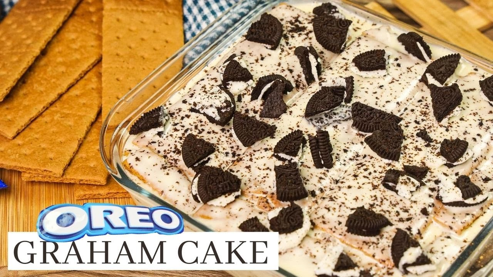

Oreo Graham Cake

Description
So, this is one of my favorite dessert.
It is so easy to make, requiring just a few ingredients.
If you have a sweet tooth, like me, then you will also love this.
Ingredients
- 200 grams Graham Crackers
- 1 pack All purpose cream
- 6 to 8 packs Oreo Cookies
- 1 can Condensed milk
Steps
- In a bowl, whisk the all purpose cream until it gets frothy. Fold in the condensed milk. Whisk until mixture is fully combined.
- In a baking pan, pour in a portion of the mixture, just enough to cover the base of the pan.
- Layer in graham crackers. Crumb graham crackersto cover the sides.
- Pour in another portion of the mixture enough tocover the crackers.
- Place oreo cookies on top. Cover the exposedcream with graham cracker crumbs.
- Pour in a portion of the mixture enough to cover the cookies.
- Repeat steps 3 to 6 until you reach your desired height of the cake or until it leaves only an inch from the top of the pan.
- Crush Oreo cookies and sprinkle them on top of the cake.
- Cover the pan and freeze overnight
- Slice, plate, serve and enjoy.